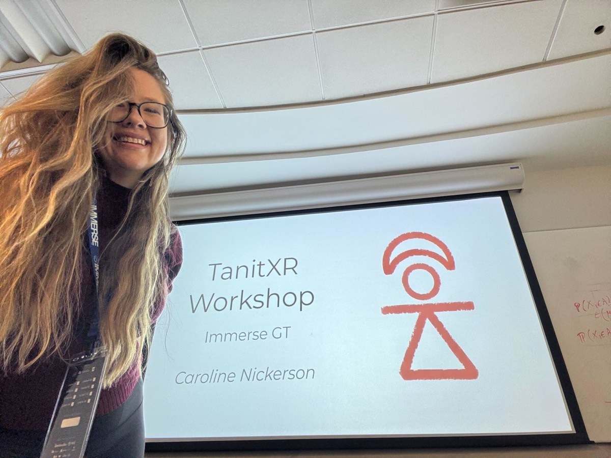
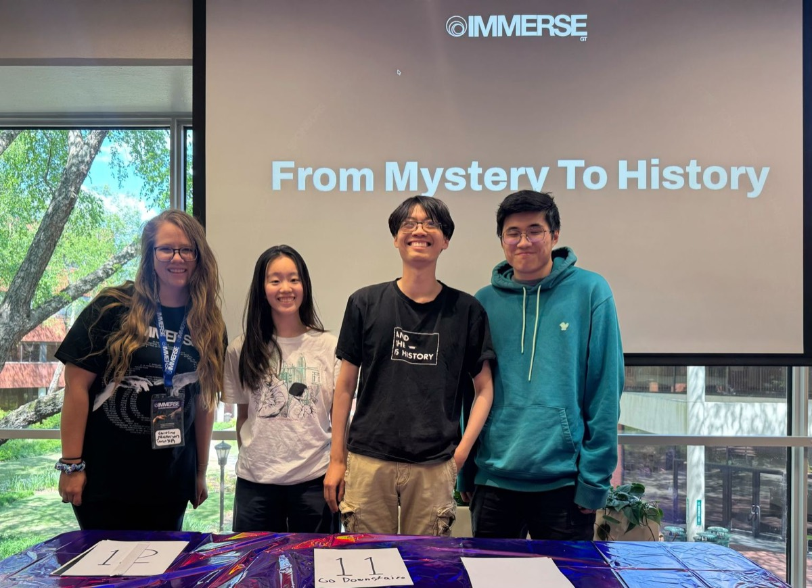

تانيت XR مشروع، برعاية مالية من Florida Community Innovation، يمكّن المتطوعين والطلاب من مسح مواقع تراثية مهددة. والهدف ليس حفظ هذه الأماكن رقميًا فحسب، بل أيضًا تعزيز تقديرها بإدخالها في بيئات وتجارب الواقع الممتد.
البلد الرائد في المسح هو تونس، ويساعد مساهمون من أنحاء العالم في تحويل هذه النماذج إلى تجارب غامرة. الملخص التعريفي بمهمتنا هنا.
رعت TanitXR مسارًا في Immerse GT من 10 إلى 12 أفريل! كان Immerse GT هاكاثون واقع ممتد لمدة 36 ساعة في جامعة جورجيا تك جمع مصممين ومطورين ورواة قصص لبناء تجارب غامرة. وقد قدّمنا جائزة 300 دولار للفريق الفائز في مسارنا.
في مسارنا، دعونا المشاركين للعمل بنماذج TanitXR ثلاثية الأبعاد حقيقية (sketchfab.com/TanitXR والنماذج التي حسّنّاها حتى الآن: https://skfb.ly/pIxPR). أردناهم أن يبتكروا تجارب تعمّق تقدير التراث التونسي الذي طالما أُهمل وشُوّه تمثيله على الساحة العالمية.
نهتم بالمشاريع التي تساعد الناس على استكشاف التراث أو فهمه أو الاهتمام به بطرق جديدة: الانغماس، أو السرد، أو التعليم، أو التفاعل، أو مساهمة الجمهور، أو شيء لم يخطر ببال أحد منا بعد.
سُمّيت TanitXR على اسم تانيت، إلهة الحماية في قرطاج القديمة (تونس اليوم)، وقد أسّستها عام 2025 Ines Said، وهي مطوّرة واقع ممتد تونسية، لصون الآثار التاريخية التي نشأت على حبها.
يركّز المشروع على أماكن تتدهور ببطء بفعل التعرض المناخي وارتفاع مستوى البحر والطقس المتطرف والعمران ونقص موارد الصون. بعد أن يمسح المتطوعون المحليون الأشياء والمناظر بتقنية القياس التصويري وينشروها كنماذج تفاعلية، يساعد المجتمع العالمي في إنشاء سجل رقمي دائم يمكن استكشافه عبر الإنترنت ويعزز تقدير التراث الإنساني المشترك في تونس.
في جوهره، يقوم هذا العمل على تعليم الناس توثيق التراث بأنفسهم. يتعلم طلاب وفنانون ومتطوعون، من تونس وغيرها، استخدام أدوات في المتناول مثل المسح بالهاتف الذكي لالتقاط الأشياء والفضاءات في مجتمعاتهم. والنتيجة أرشيف متنامٍ للتراث التونسي وعملية تشاركية تربط الناس – محليًا في تونس وعالميًا – بالمواقع التاريخية.
في إطار الفعالية، Caroline Nickerson, PhD قدّمت ورشة مرتبطة بمسار TanitXR يوم السبت 11 أفريل في الثانية ظهرًا بالتوقيت الشرقي في قاعة ISyE Main 228.
ركّزت الورشة على علم المواطن والمشاركة العامة والواقع الممتد. يقوم نموذج TanitXR على تمكين المجتمع، وقد شاركت كارولين أفضل الممارسات والدروس المستفادة من مختلف تجاربها.

سعدنا برؤية هذا الكم من المشاركات الإبداعية في مسار TanitXR بـ ImmerseGT 2026. أتيحت لجميع المشاركين فرصة استكشاف طرق قوية لاستخدام التقنيات الغامرة لصون التراث التونسي وتفسيره ومشاركته مع جمهور عالمي.
الفائز بالمسار: From Mystery to History
فاز مشروع From Mystery to History بمسار TanitXR لاستخدامه المبتكر للواقع الممتد والذكاء الاصطناعي التوليدي والقياس التصويري لإعادة تصور صون التراث الثقافي.
تميّز المشروع بإبداعه وتنفيذه المتقن وتوافقه العميق مع مهمة TanitXR في صون الإرث التاريخي التونسي ومشاركته عبر تجارب غامرة. نحن فخورون جدًا بالفريق ومتشوقون لرؤية تطور هذا المشروع!
أظهرت مشاريع أخرى من مسار TanitXR أيضًا الإمكانات المذهلة للواقع الممتد في إحياء صون التراث. نحن ممتنون بعمق لكل مشارك أسهم بأفكاره وإبداعه وشغفه في هذا التحدي. استعرض المشاركات هنا.

TanitXR ليست مجرد موضوع هاكاثون، بل مشروع نشط ومتنامٍ، ويسعدنا البقاء على تواصل مع المشاركين الراغبين في مواصلة البناء معنا بعد ImmerseGT.
هناك طرق كثيرة للمساهمة: بعض المتطوعين يساعدون في القياس التصويري والمسح، وآخرون في البحث أو الكتابة أو التفسير أو التواصل أو التطوير الغامر. إذا كنت مهتمًا بمواصلة المشاركة، سجّل عبر صفحة التطوع.
يسعدنا دائمًا العمل مع أشخاص يهتمون بالتراث والسرد والمشاركة ومستقبل التقنيات الغامرة.